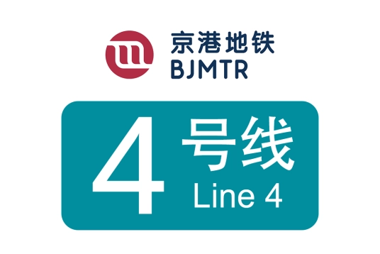
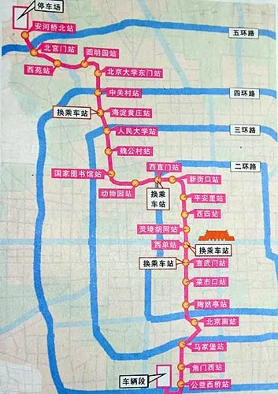
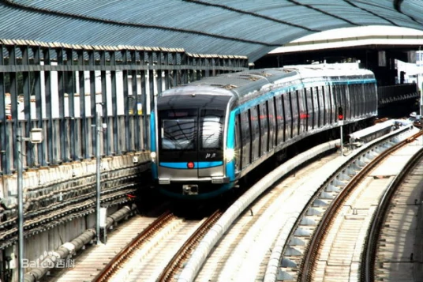

线路走向

车辆设施
SFM05

北京地铁4号线车辆采用北京地铁SFM05型电动车组车型，由南车四方机车车辆股份有限公司生产。全车为无涂装不锈钢车身，属B型车。为6节编组，总定员1440人。列车采用直流750V第三轨供电，设计最高速度每小时80千米。截至2016年5月，北京地铁4号线和北京地铁大兴线共有该型车辆93列（558辆）。
列车的车体和车窗形状有港铁特色，车门采用外挂门设计，是北京地铁中的首例。车头正中心标记了京港地铁的标志，在逃生门上则印有“北京”字样。在大兴线开通时后加入的车组的车头则只有北京字样，而没有京港地铁标志和标志旁边的蓝绿色带,